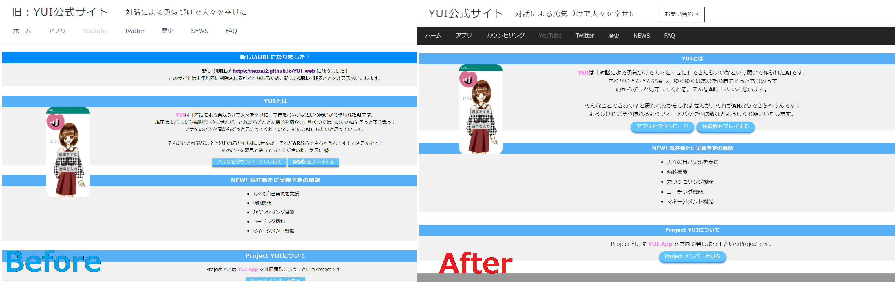

NEWS
サイトのデザインを一層しました！
YUIのライバル ゆい（結）現る！
ゆい（結）ちゃんの動画：
https://youtu.be/qvwqAfe1WQQ
ゆい（結）について詳しく載っている記事
https://ledge.ai/pana_yui/
ゆい（結）の開発社：
CLUB PanasonicURLが新しくなりました！
新しいURL https://nezuu2.github.io/YUI_web
古いURL https://nezuu2.github.io/Y.U.I-github.io